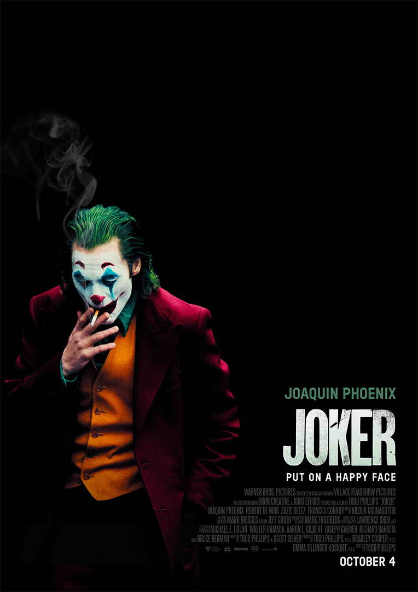

Avengers: Infinity War
In the film, the Avengers and the Guardians of the Galaxy attempt to prevent Thanos from collecting the six all-powerful Infinity Stones as part of his quest to kill half of all life in the universe.

Joker
Set in 1981, Joker follows Arthur Fleck, a failed clown and stand-up comedian whose descent into insanity and nihilism inspires a violent counter-cultural revolution against the wealthy in a decaying Gotham City.
The Dark Knight Rises
Eight years after the events of The Dark Knight, the revolutionary Bane forces Bruce Wayne to resume his role as Batman and save Gotham City from nuclear destruction.